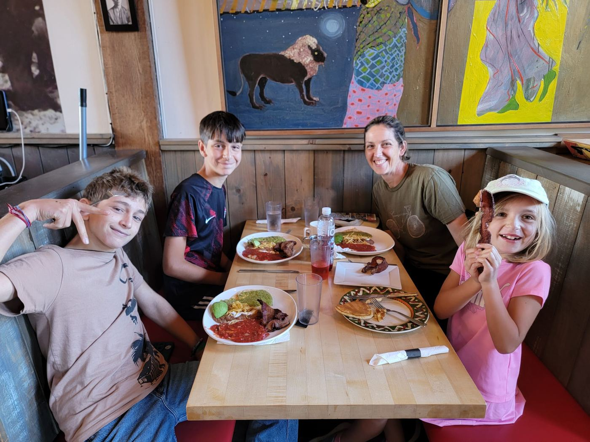
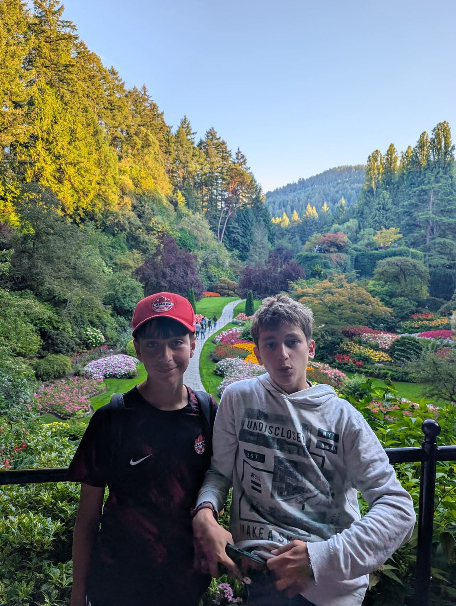

31 août
Décollage, et atterrissage le même jour
Cette fois, les vrais adieux, à l'aéroport. Puis un long vol, deux correspondances à l'intérieur du Canada, et quelque part au-dessus de l'océan, ça a commencé à devenir réel. Avec le décalage horaire, je suis arrivé à Victoria le jour même de mon départ de Paris, ce qui me perturbe encore un peu. J'ai fait tout le trajet seul, plutôt inhabituel pour quelqu'un de 13 ans, mais tout s'est bien passé.
La famille de Kai, Amy et Paul, devait être ma famille d'accueil dès le premier jour, mais ils étaient encore en voyage, donc ce sont Carmen, Flavio, Marco et Emily qui sont venus me chercher et qui m'ont accueilli en premier. Carmen elle-même n'était pas là, elle était à Vancouver pour le travail. Ma valise s'est perdue entre deux avions et est arrivée un peu après moi, mais elle a fini par arriver.
Arrivé. Avec mon frère d'accueil, aéroport de Victoria.
2 septembre
Le Malahat Skywalk
Deuxième jour, et déjà en haut d'une tour en spirale de 40 mètres avec un sol en verre, à regarder l'eau et la forêt tout en bas. Il y a aussi toute une histoire autour des cultures autochtones locales. Belle première sortie.
Sur le sol en verre du Skywalk.
3–4 septembre
Orientation, et le grand voyage de groupe que j'ai laissé tomber
La paperasse a occupé une bonne partie de la journée du 3. Le 4, je suis allé avec Marco à l'unique séance d'orientation organisée par VIE, l'organisme qui gère l'échange. On nous proposait aussi une excursion de groupe avec les autres élèves étrangers, quelques jours dans les Rocheuses. J'ai laissé tomber.
"Je ne ferai rien. C'est trop cher, et il n'y a que des lycéens là-bas de toute façon."Moi, apparemment
4 septembre
Carmen revient, en solo
Carmen était partie à Vancouver pour le travail depuis le début. Flavio, lui, était déjà là avec moi. Elle est revenue seule, en hélicoptère. Ce n'est pas vraiment mon histoire à raconter, mais la vue valait le coup d'être piquée pour cette page.
Le retour de Carmen en hélicoptère depuis Vancouver.
6 septembre
Le plat le plus épicé de ma vie
Maintenant que Carmen était rentrée, on est allés au Royal BC Museum l'après-midi (plutôt bien, en fait), puis on a mangé un repas dont je me souviens encore, mais pas pour les bonnes raisons.


Le repas le plus épicé de ma vie, sans contestation possible.
8 septembre
La rentrée
8e année (l'équivalent de la 4e), nouvelle école, tout le monde à découvrir. La suite très bientôt.